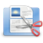
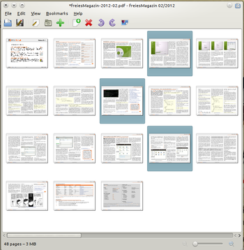

PDF Mod
Dieser Artikel wurde für die folgenden Ubuntu-Versionen getestet:
Ubuntu 16.04 Xenial Xerus
Zum Verständnis dieses Artikels sind folgende Seiten hilfreich:

PdfMod  (auch: PDF Modifier) ist ein einfach zu bedienendes, Mono-basiertes Programm zur Manipulation von PDF-Dateien. Mittels einer grafischen Oberfläche lassen sich PDF-Dokumente zusammenführen und aufteilen sowie deren Seiten rotieren, ausschneiden oder umsortieren. Zudem ist es möglich, Bilder aus PDF-Dateien zu extrahieren und Metadaten wie Titel, Betreff, Autor und Schlusswörter zu ändern.
(auch: PDF Modifier) ist ein einfach zu bedienendes, Mono-basiertes Programm zur Manipulation von PDF-Dateien. Mittels einer grafischen Oberfläche lassen sich PDF-Dokumente zusammenführen und aufteilen sowie deren Seiten rotieren, ausschneiden oder umsortieren. Zudem ist es möglich, Bilder aus PDF-Dateien zu extrahieren und Metadaten wie Titel, Betreff, Autor und Schlusswörter zu ändern.
PDF Mod wurde als Frontend für Poppler und PDFsharp geschrieben und steht unter der GPL.

Installation¶
PDF Mod ist in den offiziellen Paketquellen enthalten. Es muss folgendes Paket installiert [1] werden:
pdfmod (universe)
 mit apturl
mit apturl
Paketliste zum Kopieren:
sudo apt-get install pdfmod
sudo aptitude install pdfmod
Bedienung¶
Grundlagen¶
PDF Mod kann auch über den Aufruf von pdfmod gestartet werden [3].
Danach muss über den Menüpunkt "Datei → Öffnen" ein PDF-Dokument eingelesen werden. Nach dem Einlesen sind die Seiten PDF-Dokuments übersichtlich aufgelistet. Eine weitere Möglichkeit, eine PDF-Datei zu importieren, besteht darin, PDF-Dateien aus dem Dateimanager in das Programmfenster von PDF Mod zu ziehen.
Durch einen Einfachklick mit der linken Maustaste  können einzelne, in Kombination von Linksklicks mit der gedrückt gehaltenen Taste
Strg mehrere Seiten zur Weiterverarbeitung markiert werden. Seiten können durch Drag and Drop, also durch Ziehen an die gewünschte Stelle bei gehaltener linker Maustaste , verschoben werden.
können einzelne, in Kombination von Linksklicks mit der gedrückt gehaltenen Taste
Strg mehrere Seiten zur Weiterverarbeitung markiert werden. Seiten können durch Drag and Drop, also durch Ziehen an die gewünschte Stelle bei gehaltener linker Maustaste , verschoben werden.
Die richtig sortierten und markierten Seiten können über die Icons in der Befehlsleiste, die Menübefehle oder das Kontextmenü bearbeitet werden. Die Menübefehle sind weitgehend selbsterklärend.
Für wichtige Befehle gibt es Tastaturkürzel:
| Tastaturkürzel | |
| Taste(n) | Funktion |
| [ | Markierte Seite(n) um 90 Grad nach links drehen |
| ] | Markierte Seite(n) um 90 Grad nach rechts drehen |
| Entf | Markierte Seite(n) entfernen |
| ⇧ + Strg + I | Auswahl invertieren |
| Strg + + | Anzeige vergrößern |
| Strg + - | Anzeige verkleinern |
| F11 | Vollbildmodus |
Metadaten¶
Um die Metadaten der geladenen PDF-Datei zu verändern, muss im Menü unter "Datei → Eigenschaften" aufgerufen werden und im aufgerufenen Dialogfeld die gewünschten Änderungen vorgenommen werden.
Speichern der Änderungen¶
Um die durchgeführten Änderungen zu speichern, kann entweder mit "Datei → Speichern" das alte Dokument überschrieben werden oder mit "Datei → Speichern unter" eine neue Datei erstellt werden.
Programmfehler¶
Die in der Ubuntu-Version 14.04 verfügbare Version von pdfmod ist recht instabil. Sie aktualisiert die Vorschau für die einzelnen Seiten beim Entfernen nicht, d.h. man sollte von hinten nach vorn löschen und die Seitenvorschau ignorieren bzw. öfters abspeichern und neu laden. Ferner lassen sich keine einzelnen Seiten per Ziehen-und-Fallenlassen aus einem anderen Fenster einfügen, stattdessen stürzt das Programm ab. Fügt man Seiten aus einer Datei ein, so werden sie vor der ersten Seite eingefügt und können dann verschoben werden; eine solchermaßen zusammengefügte Datei läßt sich dann aber mit pdfmod nicht mehr laden, d.h. das Programm stürzt bereits beim Laden ab.
Die in der Ubuntu-Version 16.04 verfügbare Version 0.9.1 aus dem Jahre 2011 scheint nun das Aktualisieren der Vorschau beim Entfernen einzelner Seiten zu beherrschen. Auch das Einfügen weiterer PDF-Dokumente und das Umsortieren von Seiten funktioniert und kann gespeichert und wieder geladen werden.

 Übersichtsseite
Übersichtsseite- Erstellt mit Inyoka
-
 2004 – 2017 ubuntuusers.de • Einige Rechte vorbehalten
2004 – 2017 ubuntuusers.de • Einige Rechte vorbehalten
Lizenz • Kontakt • Datenschutz • Impressum • Serverstatus -
Serverhousing gespendet von